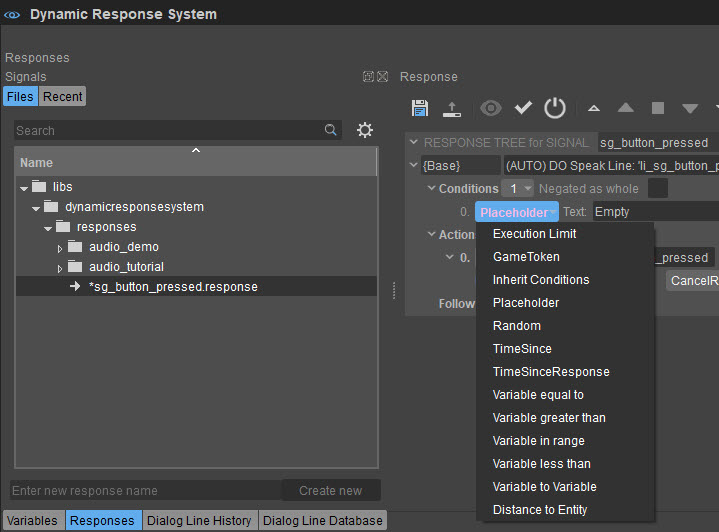
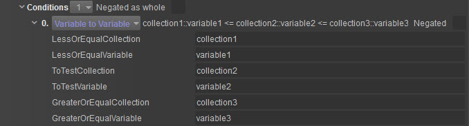
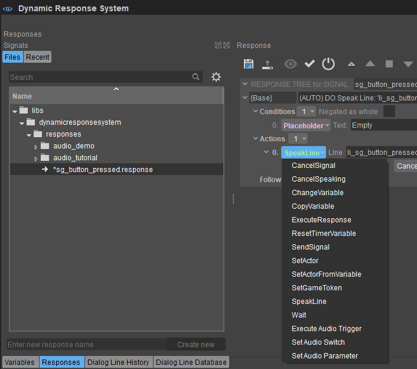
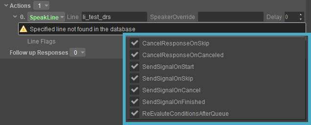

Обзор
Система динамического ответа (DRS) включает в себя множество функций, которые можно использовать для обеспечения уникального ответа на сигнал. Чтобы эффективно использовать DRS, Условия и Действия должны быть настроены в соответствии с ожидаемым результатом.
Каждая из этих функций имеет уникальный эффект, и их можно комбинировать для достижения любого типа реакции, предусмотренного для сигнала.
В дереве ответов можно найти следующие функции:
Условия
Условия относятся к определенному значению или функции, которую необходимо проверить перед выполнением действия. Они играют роль между сигналом и действием и определяют, будет ли действие выполнено, повторено или остановлено и т. д.
Пользователи могут назначить ответу следующие условия:

Условия
| Вариант | Описание |
|---|---|
Лимит выполнения | Всякий раз, когда ответ выполняется, его внутренний ExecutionCounter увеличивается. С этим условием вы можете проверить это ExecutionCounter
Тест проводится так: ExecutionCounter>=MinExecutions AND ((ExecutionCounter<=MaxExecutions) OR MaxExecutions< 0) Примеры Для простого и единственного условия установите MinExecutions чтобы 0 и MaxExecutions чтобы 1. Для условия после третьего раза установите MinExecutions чтобы 3 и MaxExecutions чтобы -1. Для условия, выполняемого в пятый раз, установите MinExecutions и MaxExecutions чтобы 5. Счетчик выполнения не будет увеличиваться, если условия в базе не совпадают. В этом случае ответ рассматривается как не запущенный вообще. |
Игровой токен | Аналогично переменной в диапазоне. Однако это условие не проверяет переменную DRS; вместо этого он проверяет игровой токен.
В общем, переменные DRS быстрее использовать в условиях, поэтому вам следует предпочесть их использование, если это возможно. Используйте проверку игровых токенов только в том случае, если данные передаются другим системам, таким как Flow Graph. Если игровой токен имеет тип bool затем условие меняется на проверку равенства вместо проверки диапазона. |
Наследовать условия | Это условие позволяет повторно использовать условия. Это означает, что у вас может быть шаблон базы ответов, который проверяет основные вещи, такие как PlayerIsAlive, DoesHaveAGun, IsNotCoughing а затем повторно использовать условия этого ответа в различных других ответах. Это упрощает редактирование, поскольку основные условия собраны в одном центральном месте.
|
Заполнитель |
Это самое основное условие всегда истинно (если оно не отвергнуто) и это и это может быть полезно несколькими способами:
|
Случайный | Генерируется случайное число и проверяется его соответствие указанному значению. Позволяет добавить элемент рандомизации к вашим ответам.
|
Время с | Проверяет, сколько времени прошло с момента сохранения отметки времени в указанной переменной (с помощью действия «ResetTimer»).
Тест реализован как: TimerVariable >= MinElapsedTime и ((TimerVariable <= MaxElapsedTime) OR MaxElapsedTime < 0.0f) |
Время с момента ответа | Этот параметр почти такой же, как условие «Время с», но вместо проверки отметки времени, хранящейся в переменной, он проверяет внутреннюю отметку времени системы для каждого ответа, который устанавливается каждый раз, когда ответ выполняется.
|
Базовые проверки переменных (Меньше, Больше, Равно) | Эти три условия проверяют значение переменной на соответствие указанному значению.
Если переменная не существует, она будет помещена в поток как 0. Сравнение переменных DRS происходит намного быстрее, чем проверка, например, игровых токенов, поскольку они написаны менее общим способом. Если вы сравните переменную со значением другого типа, например, переменную float с целочисленным значением, результат будет совершенно неопределенным и, вероятно, не будет работать так, как вы предполагали. |
Переменная в диапазоне | Проверяет, находится ли указанная переменная между GreaterThanValue (включено) и LessThanValue.
Проверка реализована так: VariableValue >= GreaterThanValue и VariableValue <= LessThanValue |
VariableToVariable |  Подобно Переменная в диапазоне условие, но вместо сравнения значения переменной с указанными значениями из условий значения извлекаются из других переменных DRS. Тего Условие проверяет, является ли значение ToTestVariable больше или равно значению LessOrEqualVariable и меньше или равно значению GreaterOrEqualVariable.
Поэтому, если вы хотите выполнить проверку равенства, вам нужно указать ту же переменную для LessOrEqualVariable и GreaterOrEqualVariable.
|
| Расстояние до объекта | Определяет расстояние (в метрах) между актером и объектом и сравнивает его со значением, присвоенным Расстояние. Это особенно полезно при определении громкости диалога в зависимости от расстояния; то есть, должно ли оно звучать сильнее или слабее.
|
Действия
Ниже приведен список всех доступных действий по умолчанию, которые можно добавить в ответ. 
Действия
| Вариант | Описание | ||||||||||
|---|---|---|---|---|---|---|---|---|---|---|---|
CancelSignal | Это действие отменяет уже запущенный ответ.
Если Сигнал остается пустым, используется имя текущего ответа, поэтому выполняемый в данный момент ответ отменяется. Вы можете использовать специальное ключевое слово Все здесь, чтобы отменить любой текущий ответ. В сочетании с OnAllActors это можно использовать для отмены всех текущих ответов всех актеров. | ||||||||||
CancelSpeaking | Это действие заставит указанного актера(ов) немедленно прекратить говорить. Линии не будут считаться законченными, поэтому линии, которые можно воспроизвести только один раз, можно будет воспроизвести снова в какой-то момент позже. Линии в очереди также отменяются.
Ответ, который начал отмененную строку, не будет отменен этим, если только начальный SpeakLine действие настроено таким образом, что оно должно завершать ответ при отмене. Поэтому, если есть последующие ответы, актер может сразу начать следующую строку. Используйте Отменить ответ вариант, если вы хотите вместо этого отменить ответ. | ||||||||||
Изменить переменную | Это действие используется для изменения значения переменной DRS. Вы можете напрямую установить новое значение или изменить текущее значение, добавляя к нему или вычитая его, используя разные значения для Операция.
Время восстановления бега сбрасывается при сохранении/загрузке, поэтому вам не следует использовать его в течение длительного времени. Для этих сценариев используйте ResetTimer действие. | ||||||||||
| Копировать переменную | Копирует определенные переменные, которые хранятся в коллекциях внутри DRS.
| ||||||||||
ExecuteResponse | Это действие выполняет другой ответ и ожидает его завершения. Если вам не нужно ждать, проверьте SendSignal вместо этого действие.
Это может быть очень полезно для повторного использования повторяющихся последовательностей действий путем создания ответов, которые используются просто как контейнеры, содержащие эти последовательности действий и не предназначенные для прямого выполнения. | ||||||||||
ResetTimerVariable | Это действие сохраняет текущее время в переменную. Сохраненное время затем можно использовать в сочетании с TimeSince состояние. Время сохраняется как значение float, как и глобальная переменная. CurrentTime.
| ||||||||||
SendSignal | Это действие просто посылает новый сигнал. Это простой способ начать другой ответ. Если вы хотите дождаться завершения другого ответа, вместо этого вам следует использовать «Выполнить ответ».
| ||||||||||
SetActor | Это действие устанавливает текущего активного субъекта для текущего ответа. Это означает, что любые дальнейшие действия, такие как SpeakLine действия «Установить (локальную) переменную» и «Отправить сигнал» будут выполнены над этим актером. Имя актера — это имя сущности.
Это действие действительно важно, если вы хотите, чтобы актер реагировал на получение сигнала другим актером. Например, можно использовать следующую настройку: Ответ на «WasShot»: SpeakLine «Ой», SetActor «Союзник», SpeakLine «Осторожно». Некоторые действия могут иметь override в зависимости от того, какой актер используется. Например, в SpeakLine действие вы можете указать Переопределить актера который используется вместо текущего актера. | ||||||||||
SetActorFromVariable | То же, что SetActor но вместо того, чтобы напрямую указывать имя устанавливаемого актера, вы указываете переменную, содержащую имя актера. Это позволяет вам, например, передать имя ближайшего союзника вместе с сигналом и использовать эти данные в другом ответе, чтобы установить актера, который должен что-то сделать.
Пример: Сигнал: «WasShot» отправить игроку с ContextVariable «Attacker = враг1». Ответ начинается со следующих действий: SpeakLine «Ой», SetActorFromVariable «Контекст::Атакующий», SpeakLine «Это тебя научит!» <-- будет говорить "enemy1" | ||||||||||
SetGameToken | Это действие установит игровому токену указанное значение. В общем, для хранения данных быстрее использовать переменные DRS. Однако его следует использовать только в том случае, если вы хотите взаимодействовать с другими системами, такими как Flow Graph.
| ||||||||||
SpeakLine | Запрашивает текущего актера или SpeakerOverride если таковой предусмотрен, произнести указанную строку.
Есть три возможных результата этого запроса:
Если щелкнуть раскрывающееся меню справа от Линейные флаги, вы можете выбрать несколько флагов линии:  Эти флаги линии можно использовать, чтобы действие активировало новые сигналы при определенных событиях, таких как начало линии, отмена линии, пропуск линии. Это позволяет актеру отреагировать другим ответом, например, если строка была пропущена. Сигналы получили названия LineCanceled, LineSkipped, LineStarted и LineFinished. У каждого из них есть контекстная переменная, называемая Линия. Если вы выберете флаг SendSignalOnStart он отправит сигнал под названием LineStarted с контекстной переменной, называемой Линия. Если вы выберете флаг SendSignalOnCancel он отправит сигнал под названием LineCanceled с контекстной переменной, называемой Линия. И т.д.
| ||||||||||
Подожди | Это действие ничего не делает в течение указанного времени, и вы можете использовать его для некоторых основных настроек времени. Поскольку ответ не будет продолжать выполняться до тех пор, пока не будут выполнены все действия в текущем сегменте, это приведет к задержке начала любых дальнейших действий.
| ||||||||||
| Выполнить аудио-триггер | Определяет Аудио триггер это должно быть выполнено в ответе. Для получения дополнительной информации о Аудио Триггеры, пожалуйста, обратитесь к Редактор управления звуком страница.
| ||||||||||
| Установить переключатель звука | Определяет, какие Переключатель и Переключить состояние будет использоваться в ответе. Это особенно полезно, когда необходимо воспроизвести разные типы вокализации в зависимости от определенного условия; например шептать, говорить, кричать и т. д. Для получения дополнительной информации о Переключатели и Переключение состояний, пожалуйста, обратитесь к Редактор управления звуком страница
| ||||||||||
| Установить параметр звука | Определяет, какие Параметр будет использоваться и потенциально изменяться в ответе. Этот параметр может быть полезен при настройке реализации звука, использующей параметр, а также для изменения его звука путем изменения воспроизводимого звука в промежуточном программном обеспечении. Для получения дополнительной информации о Параметры, пожалуйста, обратитесь к Редактор управления звуком страница.
|
Последующие ответы
Пользователи могут указать несколько последующих ответов для любого заданного сигнала, которые будут выполняться после успешного выполнения базового ответа.
DRS всегда выполняет ответ Follow up с наибольшим количеством выполненных условий. Если доступно более одного ответа на последующие действия с одинаковым количеством условий, DRS выбирает ответ случайным образом.